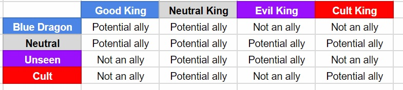

I believe the way the ability used to be months ago was pretty solid until it was able to identify exactly what faction a player was from.
My suggestion is basically to revert it back to that for all King’s and possibly tack on discovering whether or not they have Royal blood, too.
Image example in table form of a King checking a particular player and the result they get depending on their faction:

This would be much more fair to Neutral’s and possibly boost Neutral Killer’s win-rates slightly too. I’ve seen too many games where a King finds a neut with their check and immediately puts them up for trial the following day. >.>
Side note: Yes, this would make Neutral King’s MUCH less useful for investigating, but most of the ones I see just guard themselves anyway and let BD/Unseen slog it out until they can vote with the majority to determine the winner.